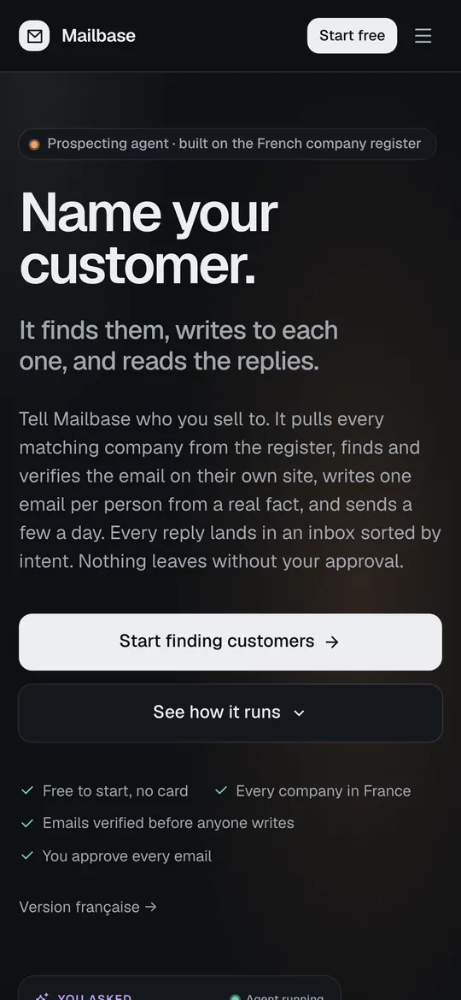

Mailbase
- En ligne
- Fondateur
Agent de prospection par e-mail bâti sur le registre SIRENE : il trouve les entreprises, vérifie les adresses, rédige des e-mails personnalisés par IA et trie les réponses par intention.
- Envoi multi-tenant (Amazon SES, useSend) avec coupe-circuit sur les rebonds et plaintes, conçu après un vrai incident d'abus.
- Assistant agentique intégré (Vercel AI SDK, multi-fournisseurs) et serveur MCP avec OAuth : Claude, Cursor ou Codex agissent sur les données du workspace. Distribué en plugin Codex.
- Facturation Stripe, quotas par offre, interface bilingue FR/EN, boîte de réception triée par intention, workflows, tests A/B.
- API publique d'envoi réutilisée comme infrastructure e-mail par 4 de mes autres projets.
- 473 commits, 145 fichiers de tests (unitaires + navigateur Playwright), 106 migrations SQL, CI.
- Next.js 16
- PostgreSQL
- Auth.js
- Amazon SES
- Stripe
- Vercel AI SDK
- MCP
- Playwright
mailbase.studio Plugin Codex (GitHub) Code source privé